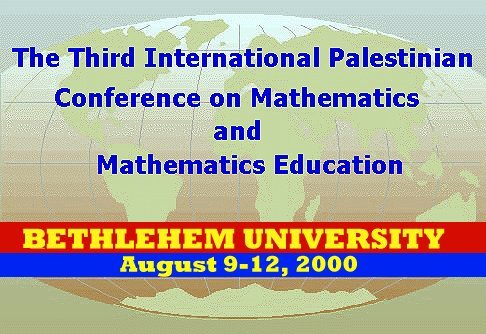
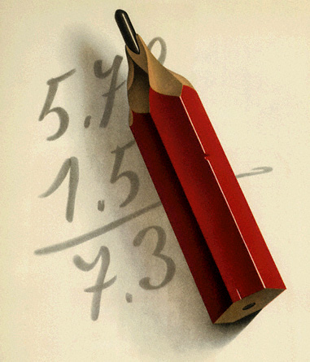

<BODY BACKGROUND="mathformulas.gif">
<P ALIGN="CENTER"><p></p></P>
<BLOCKQUOTE>
<P>
<H2><FONT SIZE="6">Organizers:</FONT></H2>
<P><FONT SIZE="4">The Palestinian Society for Mathematical Sciences (PSMS) and the Department of Mathematics at
Bethlehem University (BU) are organizing the 3rd International Palestinian Conference on Mathematics and Mathematics
Education (IPCME) to be held August 9-12, 2000 at BU, Bethlehem, Palestine.</FONT>
<H2>Conference Focus:</H2>
<P><FONT SIZE="4">The main focus of the IPCME will be recent developments in pure and applied mathematics and its
applications, curriculum developments in undergraduate education, and topics related to these subjects.</FONT>
<H2>Dissemination:</H2>
<P><FONT SIZE="4">A refereed proceedings of the conference will be published by an international publisher.</FONT>
<H2>Call For Papers:</H2>
<P><FONT SIZE="4">A person wishing to present a paper in the conference may send an abstract together with the
registration form to the organizing committee no later than May 1, 2000. Material may be submitted via e-mail or
regular mail. Papers reporting original and unpublished research results and expository papers are solicited. Accepted
papers will be published in the conference proceedings. More details about this will be provided during the conference.</FONT></P>
<P><A HREF="regform.html"><FONT SIZE="4">Click here</FONT></A><FONT SIZE="4"> to fill the registration form through
the browser, Otherwise </FONT><A HREF="regf_p.html"><FONT SIZE="4">Click here</FONT></A><FONT SIZE="4"> and print
the registration form to fill it manually and send it by regular mail.</FONT>
<H2>Scientific Committee:</H2>
<P><FONT SIZE="4">Professor Sir Michael Atiyah, UK; Professor P. Butzer, Germany; Professor I. Ekeland, France;
Distinguished Professor S. K. Jain, USA; Professor M. Ismail, USA; Professor M. Z. Nashed, USA; Professor G. Sell,
USA; Professor R. Wisbauer, Germany</FONT>
<H2>Organizing Committees:</H2>
</BLOCKQUOTE>
<UL>
<LI><FONT SIZE="4"><B>Local:</B> Dr. A. Abed Mohsen, An-Najah University, Dr. R. Abu Saris, Birzeit University,
Dr. M. Al-Emleh, An-Najah University, Dr. F. Allan, Birzeit University, Dr. M. El-Atrash, Gaza Islamic University,
Dr. T. El-Moghrabi, Al-Quds University, Dr. S. Matar, An-Najah University, Dr. M. Qumsiyeh, Bethlehem University,
Dr. N. Rabeei, Poleticnic Filistine, Dr. M. Saleh, Birzeit University.</FONT>
<LI><FONT SIZE="4"><B>International </B>Prof. S. Elaydi, Trinity University, USA, Prof. A. Elkhader, Northern State
University, USA, Prof. S. Lopez-Permouth, Ohio University, USA, Prof. E. Titi, University of California at Irvine,
USA.</FONT>
<H2>Preliminary List of Invited Speakers:</H2>
<P><FONT SIZE="4">A list of speakers will appear in the second announcement.</FONT>
</UL>
<BLOCKQUOTE>
<H2>Conference Site:</H2>
<P><FONT SIZE="4">The conference will be held at BU located in the city of Bethlehem, which is about 10 miles south
of Jerusalem. BU has one of the oldest and most beautiful campuses in the region. The department of mathematics
has spacious classrooms. It has various computer labs. The department offers fax, E-mail and secretarial support.
Food facilities are available on campus. In addition, local arrangements have been made for reception and banquet
at the beginning and the end of the conference.</FONT>
<H2>Hotels & Transportation:</H2>
<P><FONT SIZE="4">Lodging facilities are available in Bethlehem, which is about 1/2 mile from the BU campus. Transportation
will be available from and to the conference. Public transportation is available at a reasonable rate. The local
arrangement committee will make arrangements with hotels to provide transportation to the BU campus. In addition,
car rental is available through most American car rental companies' offices in Jerusalem. Special tours to Jericho
and the Dead Sea have been prepared for participants</FONT>
<H2>Registration fees:</H2>
<P><FONT SIZE="4">The registration fee is $100.00 for non-members and free for students. The fee covers a copy
of the conference proceedings, the conference program, abstracts, refreshments, session attendance, banquet social
events, and membership in the PSMS. <BR>
Method of payment: checks or money orders payable to PSMS. <BR>
</FONT><FONT SIZE="5"><B>For more information contact:</B></FONT><FONT SIZE="4"><BR>
</FONT><FONT SIZE="5"><I><B>Mohammad Saleh</B></I></FONT><FONT SIZE="4"><BR>
Department of Mathematics <BR>
Birzeit University, P.O. Box 14<BR>
Birzeit, Palestine<BR>
E-mail: </FONT><A HREF="mailto: msaleh@birzeit.edu"><FONT SIZE="4">msaleh@birzeit.edu</FONT></A><FONT SIZE="4"><BR>
Phone: (972) 02-281-0166</FONT></P>
<P><FONT SIZE="5"><I><B>Fathi Allan</B></I></FONT><FONT SIZE="4"><BR>
Department of Mathematics <BR>
Birzeit University, P.O. Box 14<BR>
Birzeit, Palestine<BR>
E-mail: </FONT><A HREF="mailto: fathi@birzeit.edu"><FONT SIZE="4">fathi@birzeit.edu</FONT></A><FONT SIZE="4"><BR>
Phone: (972) 02-281-0166<BR>
</FONT><FONT SIZE="5"><I><B>Maher Qumsiyeh</B></I></FONT><FONT SIZE="4"><BR>
Department of mathematics<BR>
Bethlehem University, Bethlehem, Palestine<BR>
E-mail: </FONT><A HREF="mailto: qumsiyeh@bethlehem.edu"><FONT SIZE="4">qumsiyeh@bethlehem.edu</FONT></A><FONT SIZE="4"><BR>
Phone: Office: (972)-02-274-1241, Home: (972)-02-277-2521<BR>
</FONT><FONT SIZE="5"><I><B>Saber Elaydi<BR>
</B></I></FONT><FONT SIZE="4">Department of Mathematics<BR>
Trinity University, San Antonio, Texas 78212, USA<BR>
E-mail: </FONT><A HREF="mailto: selaydi@trinity.edu"><FONT SIZE="4">selaydi@trinity.edu</FONT></A><FONT SIZE="4"><BR>
Phone: (210) 999-8246<BR>
</FONT><FONT SIZE="5"><I><B>A. S. Elkhader</B></I></FONT><FONT SIZE="4"><BR>
Department of Mathematics<BR>
Northern State University, Aberdeen, South Dakota 57401, USA.<BR>
E-mail: </FONT><A HREF="mailto: elkhadea@northern.edu"><FONT SIZE="4">elkhadea@northern.edu</FONT></A><FONT SIZE="4"><BR>
Phone: (605) 626-2432<BR>
</FONT><FONT SIZE="5"><I><B>Edriss Titi</B></I></FONT><FONT SIZE="4"><BR>
University of California-Irvine<BR>
Irvine CA 92697, USA.<BR>
E-mail: </FONT><A HREF="mailto: etiti@math.uci.edu"><FONT SIZE="4">etiti@math.uci.edu</FONT></A><FONT SIZE="4"><BR>
Phone: (949) 824-3156</FONT></P>
<P ALIGN="CENTER"><IMG SRC="line_1.gif" WIDTH="500" HEIGHT="4" ALIGN="BOTTOM" BORDER="0"></P>
<P ALIGN="CENTER"><p></p>
</BLOCKQUOTE>
</BODY>